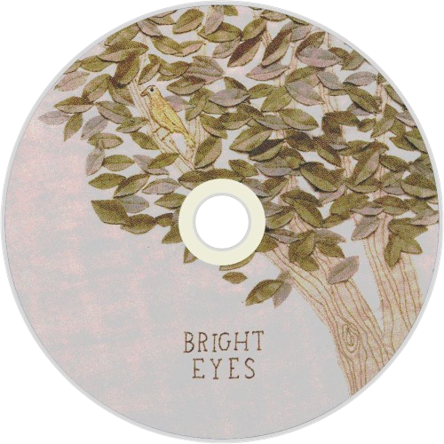

Bright Eyes is an American indie rock band founded in Omaha, Nebraska, by singer-songwriter and guitarist Conor Oberst. It consists of Oberst; multi-instrumentalist and producer Mike Mogis; arranger, composer, trumpet and piano player Nate Walcott; and a rotating line-up of collaborators drawn primarily from Omaha's indie music scene. Between 1998 and 2011, the band's albums were released through Saddle Creek Records, a Nebraska-based label founded by Justin Oberst (Conor's brother) and Mogis. In January 2020, the band announced their return, having signed with Dead Oceans. Their most recent album—Five Dice, All Threes—was released in September 2024. After being a founding member of Commander Venus—which disbanded in 1997—guitarist/vocalist Conor Oberst turned to focus on his new project, Bright Eyes. In 1998, he released 20 of the songs he had been stockpiling as the first official Bright Eyes album, A Collection of Songs Written and Recorded 1995–1997. The album saw Conor Oberst beginning to experiment with drum machines, keyboards and other instruments. The sound of the album ranges from bleating vocals to acoustic guitar songs and techno-style synthesizer instrumentals. Critical reaction was negative, with AllMusic saying that many of "the songs disintegrate as his vocals are reduced to the unintelligible babbling of a child. Any balance the music maintained up to that point, however fragile, is lost and so, more than likely, is the listener."